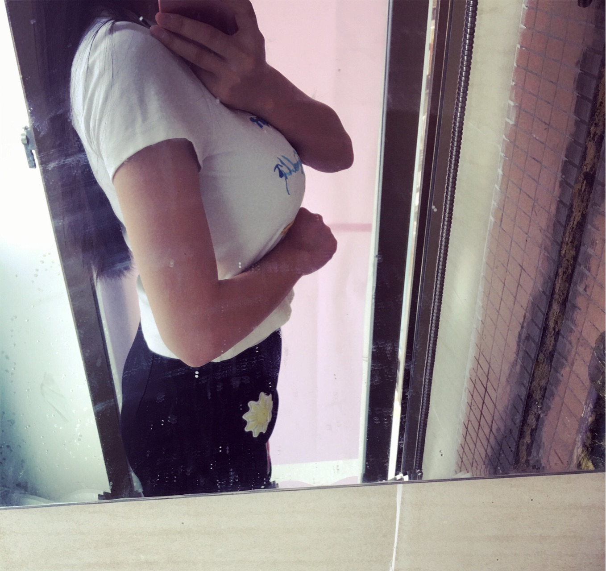
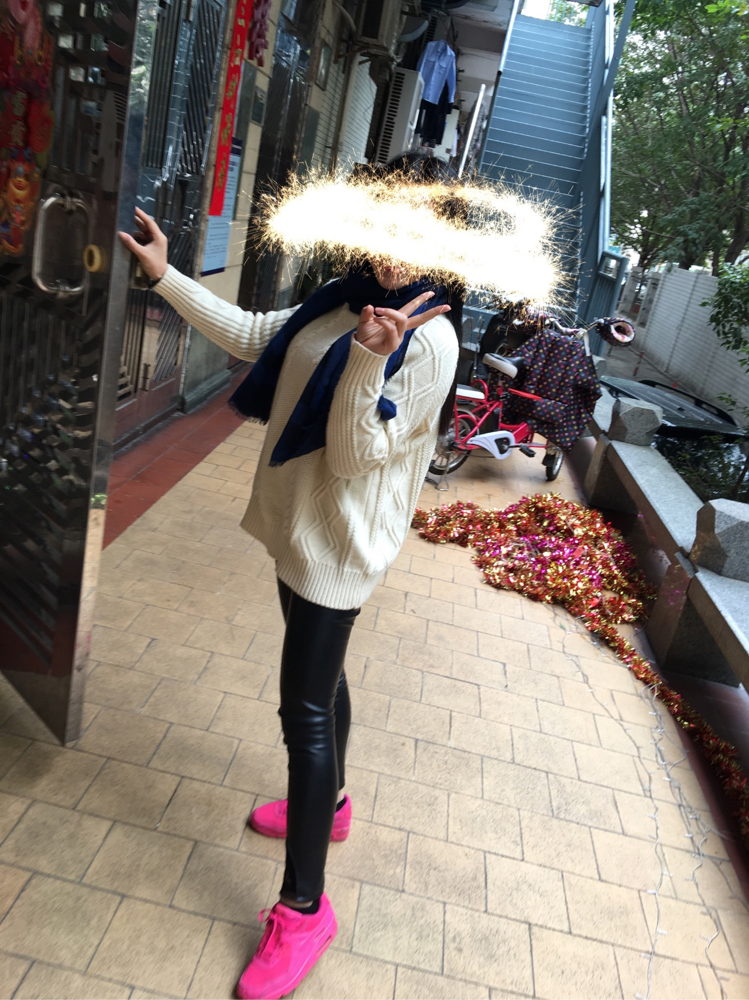

名字:
匿名用户
性别:男
介绍:
问题
答案
新建于:2016-06-09 03:34:59 AM，更新于2016-07-17 10:57:45 AM
Pre上一页
Next下一页
跳页:
正文: 是的，我妈应该是34k，我32j，我妹妹很瘦很瘦也有d，高中我发育的晚，舍友管我叫太平公主，我一点也没觉得不开心啊，我阿姨当时说:你妈妈胸那么大，你等着吧，你以后也会是巨胸。
我上大学还在变大，我以为大家的胸都这样子，直到有一天体检，有一个要脱衣服的体检，体检的那个女医生，看到我的胸的时候表情都变了。因为人不胖，然后我不喜欢穿紧身的衣服，(穿紧身衣服看着太夸张了)加上拍照喜欢选角度显胸小，大胸不上镜的，所以大家都以为我胸不大，以为我只是上半身胖。只有一部分老司机，看的出来，真正的大胸并不是挤出来很紧凑的乳沟，根本就不用挤好么，还有说减肥把胸减小的，那种胸是胖出来的好吧，我瘦了10斤还是罩杯变大，下围变小。我的内衣基本都只有一件t恤的那个两层或者3层的厚度，所以夏天我都要穿两件，里面都要多穿一件背心或者裹胸，还有我是不会发漏胸照的，回答了那么多问题，就这个居然好多人评论，别的回答基本没人，醉了
Pre上一页
Next下一页
跳页: